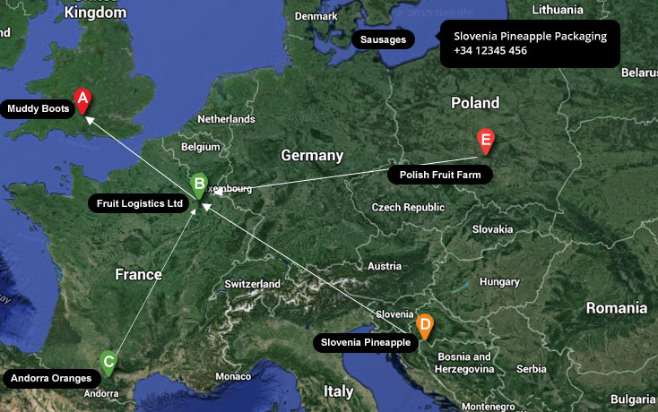

This page outlines for using google maps within the Greenlight Products.
Do not customise the core colours of the Googlemap. 
Where possible use the satelite view.
Use white arrows on 2 pixel wide lines when required to show movement from site to site (such as products in the supply chain).
Use the core colours from the palette for pins.
Invert labels so they are white on a black background. This helps to differentiate between our labels and the existing places on Google maps.
Greenlight Products use a white marker (also known as a pin) as default. Again this is font awesome, although these can all be exported to svg. Which is perfect when removing the 'hole' to add a letter to label the pin - In this example the letter A.